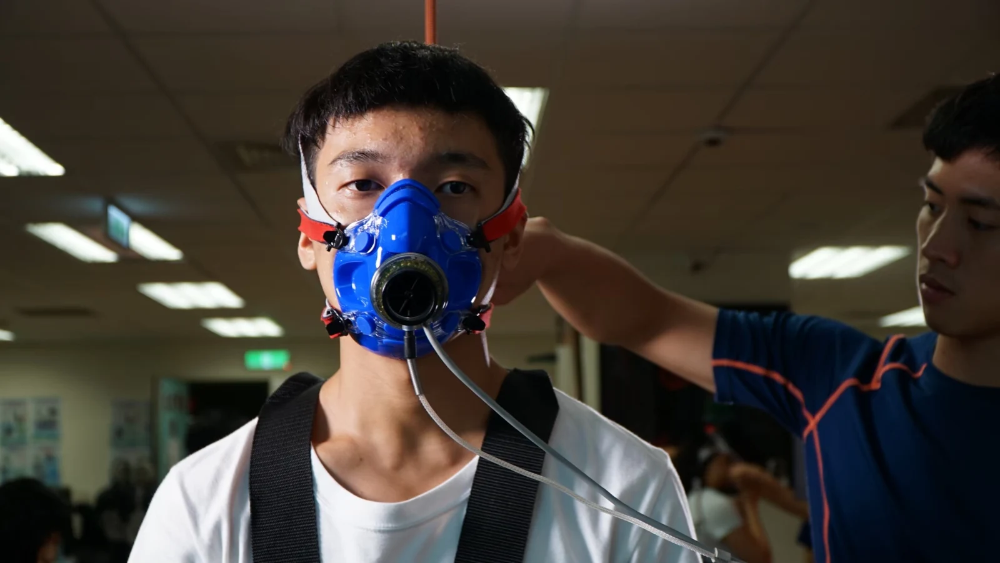
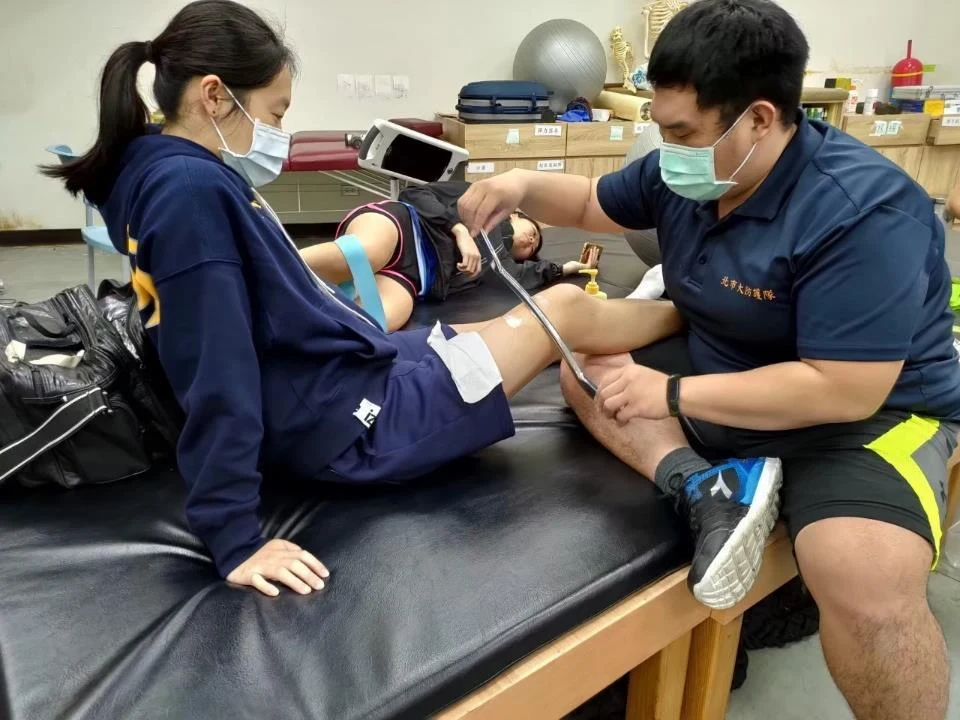
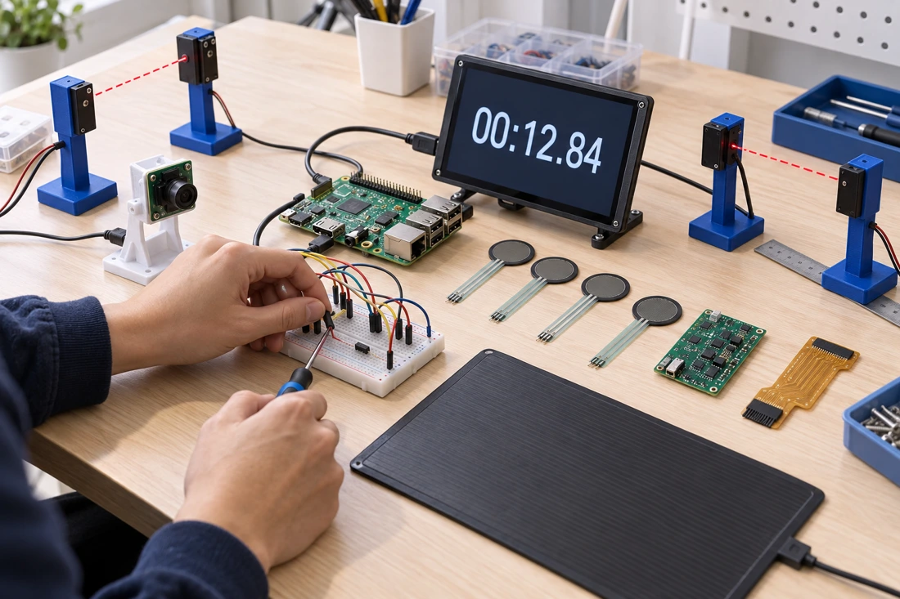
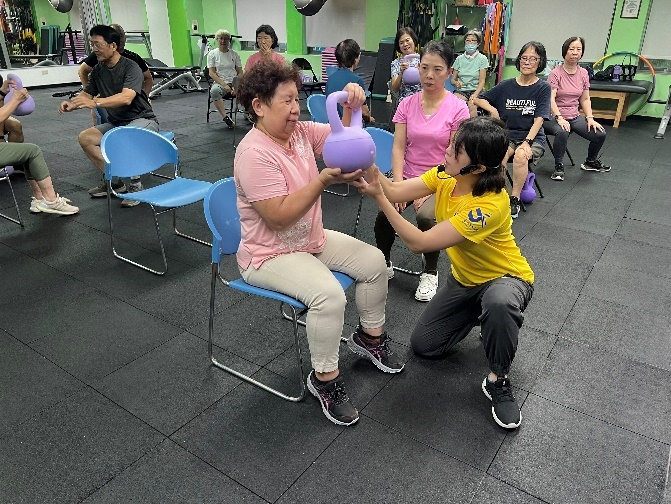
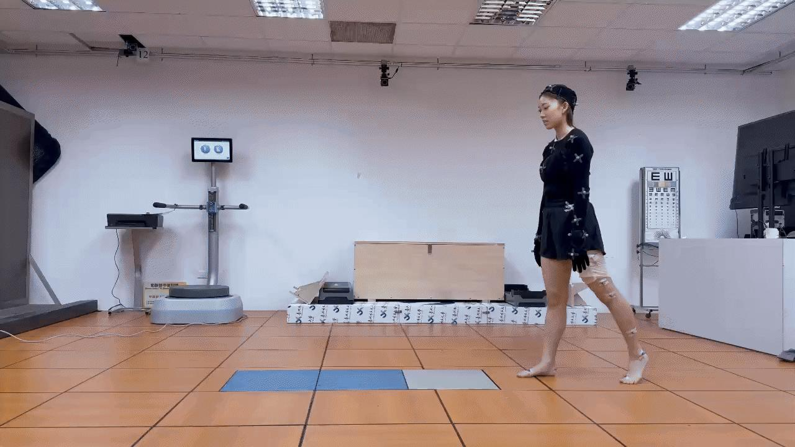

網路報名與繳費
116 MASTER'S ADMISSIONS · 2027
把研究，做進真實世界。
從人體表現、臨床健康到 AI 與智慧感測，在北市大運健碩士班，用研究回答真問題，也把成果帶上國際舞臺。
08專任教師
20位聯醫兼任師資
59項研究器材
ECSS國際全英文發表
116 學年度碩士班考試入學
先把重要日期，
放進你的行事曆。
招生簡章已於 115 年 11 月 17 日公告。以下依招生組公告整理；各系所考試方式、審查項目與場次以正式簡章及後續公告為準。
115.12.08（二）09:00
期限內完成線上報名及繳費，並確認繳費狀態。書面資料郵寄
115.12.29（二）前
僅限簡章規定須寄件者；含當日，以郵戳為憑。筆試／複試
依正式簡章與
系所公告
不以往年日期代替正式場次，請持續留意招生組公告。報名前請完成最後核對本頁是招生導讀，不取代正式簡章。前往招生組公告 ↗
GLOBAL CLASSROOM / ECSS
你的研究，
可以被世界聽見。
從研究設計、英文摘要、海報到現場問答，教師帶領研究生參與歐洲運動科學學院年會，把國際研討會變成移動的研究教室。

2025 · RIMINI, ITALY
第 30 屆 ECSS 年會
全英文海報與口頭發表、國際提問與跨國研究交流。

2024 · GLASGOW, UK
第 29 屆 ECSS 年會
學生以英文說明研究方法、成果與應用。
“
不只讀懂一篇論文，還要能清楚說明：你為什麼做、怎麼驗證，以及研究能改變什麼。
研究訓練的核心能力
MAKE RESEARCH TANGIBLE
不只使用科技，
更把工具做出來。
運動健康科技應用推動小組，帶領學生從研究問題出發，使用 AI 協作開發 App、串接感測器與物聯網，並透過數位製造做出能測試、能迭代的研究工具。
01
AI 協作開發 App
把研究流程轉成可操作的介面、分析工具與視覺回饋。
02
智慧感測與 IoT
串接穿戴裝置、影像與感測器，蒐集真實世界數據。
03
創客與檢測器材
從需求、原型到 3D 製造，親手打造研究與教學工具。
SPORT × AI × IoT
從研究問題，到真正能用的工具
學生把運動科學概念轉化為可測試、可操作、可持續迭代的作品。
AI × NFC
NFC Tag 軟體應用
洪裎恩同學
AI × RUNNING
跑步分析軟體
陳君翰同學
AI × JUMP
跳躍分析軟體
盧鈺嘉同學
RESEARCH WITHOUT BOUNDARIES
跨域，不是口號。
是我們研究問題的日常。

01人體表現與機轉
生物力學、運動生物力學、生理學、運動生理、動作控制

02臨床與健康照護
運動醫學、醫學工程、運動傷害防護、物理治療

03運動科技與數據
智慧感測、AI 影像分析、運動科技資源、檢測器材開發

04健康促進與高齡
運動健康促進、預防及延緩失能、高齡運動、社區健康

05特殊族群運動
婦女、長者、肌少症、癌後運動與慢性病照護
你帶著一個值得追問的問題來，我們一起找到方法。
找到研究導師 →SPORT SCIENCE EQUIPMENT
運動科學器材區
依《運動科學的跨域整合與實務應用》逐頁核對為八大類，共 59 項。點選分類後，向右滑即可逐一認識中英文器材名稱、正確照片與用途。
器材分類、名稱、品牌型號及照片均依系上提供簡報第 52–66 頁逐項核對；用途採招生導讀式改寫，實際操作依課程、研究與專業人員指導為準。
OUR TEACHING TEAM
專任與兼任師資，
一起撐起完整的專業學習。
八位專任教師帶領核心課程，最新 115 學年度第 1 學期名冊另有 26 位兼任或合聘教師，把臨床、運動與健康專業帶進課堂。
08
FULL-TIME FACULTY
專任教師
20
位兼任／合聘教師來自
臺北市立聯合醫院
合作領域涵蓋急重症、復健醫學、內外科、精神醫學、營養、藥學、公共衛生與高齡照護，讓研究問題能與真實臨床需求對話。
ADJUNCT & JOINT FACULTY / 115-1
26 位兼任與合聘教師
師資橫跨臨床醫學、運動傷害防護、物理治療、運動訓練、健康資料與研究方法，讓學生從不同專業視角發展研究問題。
正在載入兼任與合聘師資…
師資資料依系上提供之 115 學年度第 1 學期兼任教師名冊整理；實際授課與聘任狀況以校方當期公告為準。
ACADEMIC CAPACITY
學術量能，
從問題走向成果。
從計畫摘要、論文到專利，看看運動專業如何累積成可分享的知識。
正在載入學術成果…
資料依教師 CV、校方著作表、作者識別資料及出版來源整理，非全系完整成果總量。摘要標示為導讀、原文或節錄；未公開者保留名錄。原文全文可能需要圖書館權限。
YOUR NEXT RESEARCH QUESTION
下一個值得被解答的問題，
也許就從你開始。
加入臺北市立大學運動健康科學系碩士班，讓研究連結國際、臨床、科技與真實生活。